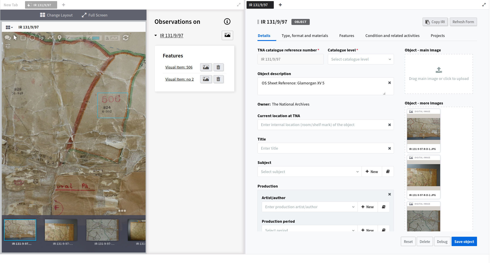
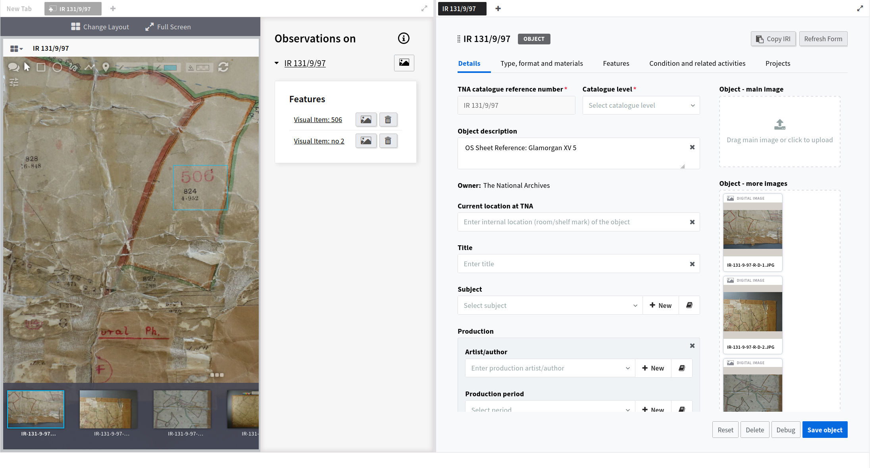

The Collection Care Department (CCD)
TNA's CCD role is to ensure access to the TNA collections through preservation
and enabling display, innovative sector-leading treatment and research,
documentation and environmental management. Two of the department’s key
strategy objectives are its practitioner-researcher approach, in that the
traditional division between conservation and heritage science is viewed as
anachronistic and progressive development of the department that relied on a
holistic and integrated approach. Knowledge is derived from all aspects of the
department's work. The second is to harness the knowledge of the department for
use by different partners and communities and collaboratively build new knowledge beyond TNA.
The Existing System and Fragmentation
Like most organisational database systems the CCD's old system
was largely administrative focussing on the basic throughput of
conservation work in the department. In hindsight, it provided very
little knowledge about the actual processes, skills, and methods used with
the varied items in TNA collection. There were basic but restricted benefits in
terms of understanding how the department worked and developed. Most of the actual
knowledge was spread across different types of recording mostly documents and spreadsheets,
but disconnected and underused. The database had been extended over time but these extensions
were pragmatic and not well integrated generating further fragmentation. The increasing
gap between an essentially static system and the actual workings of the department
represented a common problem. Therefore the objective for the TNA project was to
create a system that could grow with the department and connect all the knowledge
it generated in a form that could bring internal benefits, but crucially, be
reused externally. By reforming this aspect of their work it could underpin their strategy and reach more people.
An Evolutionary Approach
Legacy databases can be difficult and expensive to change because of their technical
inflexibility. Limited semantics and logic are built into the software, not the data, making the system
dependent on technicians not invested in the content. The hidden cost was that, in not reflecting the
reality of the department’s processes and strategy, it created both a resourcing overhead and an
intellectual overhead that worked against professional development. Data went into the system but
had no real objective. Professionals were servicing a system which provided little return providing
little insight into how people approached and developed their work or how methods and techniques had
changed overtime. It was a record with little educational or management benefit. However, CCD did not
have the time necessary to stop and conduct a detailed review of the department in one major exercise. Using
ResearchSpace meant that an evolutionary route was possible and the system itself became a tool for change and new
thinking. Initially the old data, which was still required, was cleaned and migrated to the CIDOC CRM, creating
semantically explicit information in a flexible structure - a graph. Semantic data is higher quality and
more precise but works within a flexible model which can be influenced more easily by subject experts
themselves. Once the system was migrated to the new framework it could be developed collaboratively
with a common goal to be transparent, educational, incorporate research, and better address new challenges.
Disruption to the department was kept to a minimum and the system simply continued to change and grow
incrementally. The data clean and semantic transformation was completed incrementally over a period of 4 weeks.
The system was created from scratch in a similar time span providing a custom system without the usual
timescale, resources and cost. Driven from the data, not the software, a custom system could be created
without the need for custom support. The key ingredient was Kartography's understanding of the subject area,
alongside its expertise in semantic technology.
People
Once a working system was available it was incorporated into the department immediately. This
allowed the space for a fuller information exchange about how the department worked,
how different sections within the department collaborated and how the department
collaborated within the organisation and externally. It also allowed Kartography to
describe how the new system operated and the possibilities available to people for
its use in supporting the current practices of the department and to improve the system
to make it more relevant, gradually introducing the concepts behind semantic data and
new ways of thinking about data.
Integration
CCD used the records from the TNA Discovery system which documents the archive using
the EAD system. The ResearchSpace system is able to connect with legacy API's and
databases and dynamically convert data into a semantic format as and when needed. A Discovery
interface was provided that allows CCD to find and import records from Discovery maintaining a
link between the two. This also allows CCD to augment the records with material, scientific and
historical information, including social and historical significance which is highly relevant to
preservation and conservation processes.
Evolving the System
A review was undertaken in the context of the CCD strategy and
a new version of the system was completed which incorporated an interconnected interface
based on a project approach. However, projects are not simply separate standalone pieces of work.
Projects are linked allowing past work to inform future work and provide a provenance of methods and
techniques that can be traced. Collection items and the activities around them have a life which can now
be traced and used to understand change and new developments. Complexity is supported by allowing CCD
to break archive items up into components and features from which specific regions and points can be
identified and used for precise representation of assessments, analysis, research and treatments that
they carry out without resorting to interpreting text fields which previously were the only way to
describe details. Version three of the system will focus on scientific integration and significance analysis.


 
